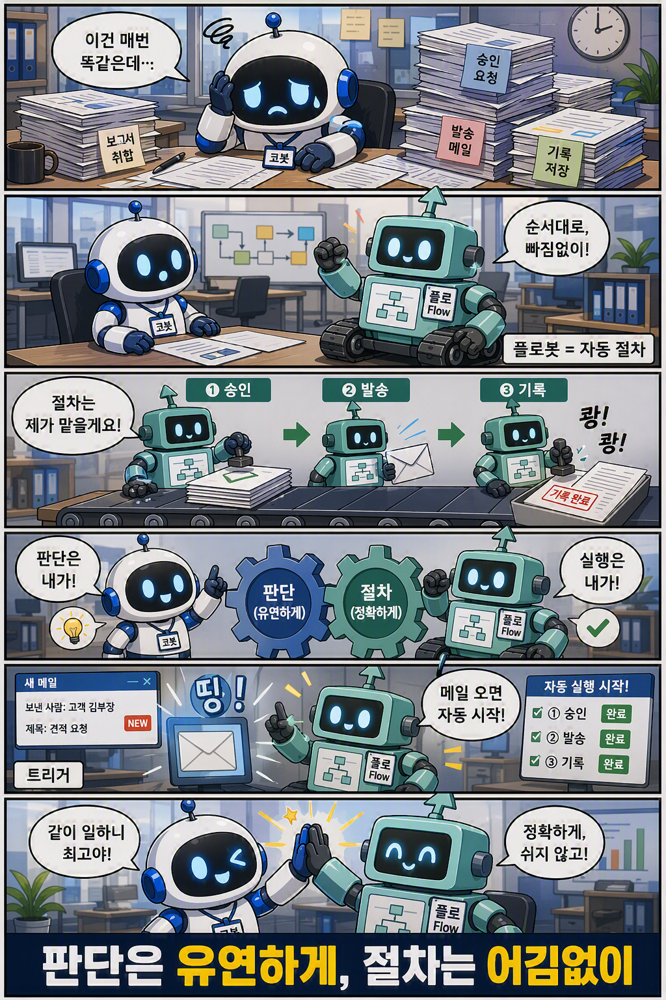

4부. 자동화한다 — 플로봇으로 절차를 엮는다

학습만화로 먼저 만나기 — 절차는 플로봇에게, 트리거로 스스로 출근한다.
2부와 3부를 지나며 코봇은 정체성과 능력을 갖췄다. 누구인지를 정하고(지침), 일하는 법과 자료와 손발을 달았다(Skill·지식·도구). 이제 코봇은 "프로젝트 일정표를 만들어 SharePoint에 올려줘" 같은 한 문장을 스스로 판단해 끝까지 해낸다. 그런데 일터의 모든 일이 그런 판단을 요구하지는 않는다. 매주 같은 시각의 상태보고, 정해진 결재선, 승인 뒤의 게시처럼 — 어김없이 같은 순서로 반복되는 절차도 많다. 이런 일에는 창의가 끼어들 자리가 없고, 끼어들어서도 안 된다.
1부 3장에서 우리는 일을 두 갈래 길로 나누어 보았다. 모호해서 그때그때 판단해야 하는 길과, 정해진 대로 어김없이 돌아야 하는 길. 지금까지는 판단의 길, 곧 코봇만을 키웠다. 4부는 나머지 한 길을 맡을 동료를 불러온다. 1부에서 이름만 소개했던 플로봇, 곧 결정적으로 도는 워크플로다.
4부는 세 장이다. 먼저 플로봇을 세운다(13장). 판단이 필요 없는 절차를 Workflows라는 자동 라인으로 짓는다. 다음으로 두 동료를 엮는다(14장). agent node로 코봇과 플로봇이 서로를 부르게 해, 3장에서 갈라졌던 두 갈래 길을 한 흐름으로 합류시킨다. 마지막으로 스스로 출근하게 한다(15장 트리거). 사람이 말을 걸지 않아도 정해진 때와 사건에 흐름이 스스로 깨어나게 만든다. 이 합류와 자동화가 신버전 Copilot Studio가 그리는 일하는 방식의 핵심이다. 정체성(2부)·능력(3부)을 갖춘 코봇이, 여기서 비로소 절차를 맡는 파트너와 한 팀이 되어 스스로 도는 데까지 나아간다.